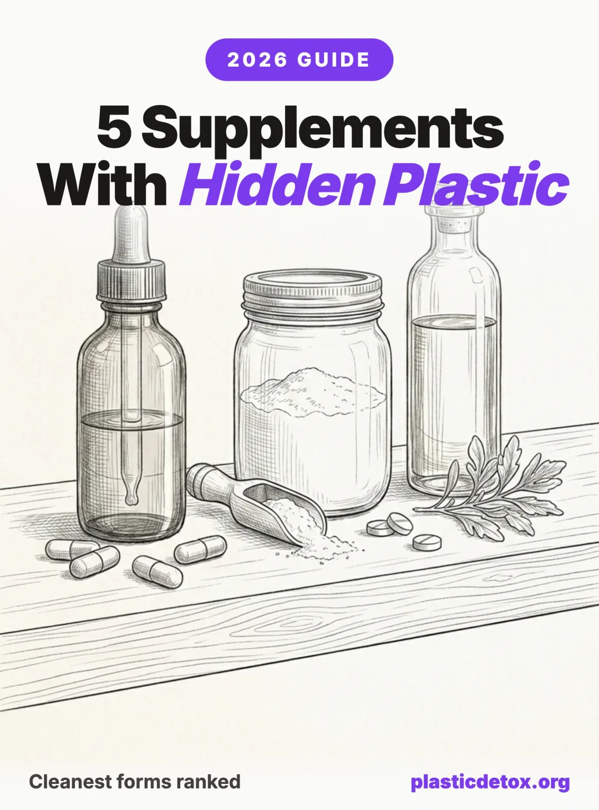

Supplements and Microplastics: The Cleanest Forms, Brands, and What to Skip (2026)
The supplement industry is tested for heavy metals, pesticides, PFAS, and sometimes phthalates. Microplastics are a near total testing gap. ConsumerLab, Labdoor, NSF Certified for Sport, Informed Sport, and even Mamavation do not test supplements for microplastics. The handful of independent studies that exist are small, recent, and concerning.
A 2024 Australian study tested nine fiber supplements and found microplastic particles in 100% of products, with users ingesting roughly 5.89 plastic particles per day from supplements alone. A 2024 Korean study found animal based omega 3 capsule oil contained around 10.6 microplastic particles per gram, and that encapsulation amplified contamination 3 to 5 times over raw oil. A 2012 Kelley label review identified phthalate plasticizers in the listed excipients of prescription pills, OTC products, slow release magnesium, probiotics, garlic, and fish oil softgels.
That is the floor of what we know. The ceiling is unknown because nobody is funding the testing. This guide walks through where plastic enters the supplement supply chain, ranks the forms from cleanest to dirtiest, and gives the cleanest realistic pick for the five supplements most people actually take.

The 30 Second Summary
- Softgels are the worst form. Phthalate plasticizers in the shell, plus 3 to 5 times more microplastics than raw oil, plus typically packaged in plastic bottles equals triple exposure.
- Liquid in glass beats capsules. Cleanest configuration: liquid in glass with a foil induction seal and a low shed cap liner. Powder in glass jar is a close second.
- Omega 3 is the highest priority switch. The single most plastic contaminated supplement category. Rosita Extra Virgin Cod Liver Oil in a nitrogen flushed glass bottle is the cleanest pick we found, and one of the only brands publishing batch microplastic test results.
- Vitamin D pick: Thorne Vitamin D3 K2 Liquid in a glass dropper bottle.
- Magnesium pick: Klean Athlete Magnesium in HPMC veggie capsules, NSF Certified for Sport.
- Creatine pick: Thorne Creatine (Creapure + NSF Certified for Sport). Founder led alt: BPN Creatine (Creapure + Informed Sport).
- Protein pick: Transparent Labs Grass Fed Whey Isolate. Per batch COAs with public lot lookup, Informed Protein certified.
- Skip entirely: Gummy supplements, effervescent tablets in foil tubes, and multi vitamin packs in single use plastic sachets.
The Problem Nobody Is Testing For
The supplement aisle has a testing gap shaped exactly like a microplastic particle. The major third party certifiers each have a specific, narrow scope, and microplastics fall outside all of them.
- ConsumerLab: Tests potency, contamination by heavy metals, and product identity. Does not test for microplastics.
- Labdoor: Tests label accuracy, product purity, ingredient safety, projected efficacy, and nutritional value. Does not test for microplastics.
- NSF Certified for Sport: Tests for banned substances and label claim verification for athletes. Does not test for microplastics.
- Informed Sport: Tests every batch for banned substances. Does not test for microplastics.
- Mamavation: Has tested for PFAS, glyphosate, and bisphenols across many product categories. Has not tested supplements for microplastics.
- Clean Label Project: Their 2023 to 2024 protein study tested 160 powders for 258 contaminants including heavy metals, bisphenols, phthalates, and PFAS. Microplastics not tested.
What the Research Actually Shows
The handful of independent studies that exist paint a small but consistent picture.
- Direct2024 Australian fiber supplement study: Microplastics found in 100% of nine products tested. Average ingestion of roughly 5.89 particles per day from supplements alone. Common particle types included polyester, polyethylene, and polypropylene.
- Direct2024 Korean omega 3 study: Animal based capsule oil averaged about 10.6 microplastic particles per gram. Plant based algal capsule oil averaged about 3.5 particles per gram. Encapsulation increased contamination 3 to 5 times over raw oil, suggesting the capsule shell and the encapsulation process itself contribute particles.
- Inferred2012 Kelley et al. phthalate label review (Environmental Health Perspectives): Reviewed product labeling and ingredient lists, not analytical chemistry on the products themselves. Phthalate plasticizers (including DBP and DEP) were identified as listed excipients in prescription pills, OTC products, slow release magnesium, probiotics, garlic supplements, and fish oil softgels. The study confirms phthalates are in these formulations by design but does not quantify migration into the consumer. DBP is restricted in pharmaceuticals in the EU but supplements are not held to the same standard.
- Direct2023 to 2024 Clean Label Project protein study: Tested 160 powders for 258 contaminants including heavy metals, bisphenols, phthalates, and PFAS (microplastics not measured). The headline findings are about lead: 65% of chocolate powders, 28% of whey powders, and 26% of collagen powders exceeded California Prop 65 thresholds for lead specifically. The composite figure (47% of all powders exceeding at least one Prop 65 threshold across lead, cadmium, arsenic, and mercury) is weighted heavily by lead. Cadmium was a secondary finding: chocolate flavors had up to 110 times more cadmium than vanilla, and plant based had about 5 times more cadmium than whey. The Council for Responsible Nutrition (CRN) publicly disputed the methodology in January 2025, citing the lack of brand transparency in the released data and Prop 65 thresholds being more conservative than federal limits. The lead findings are robust regardless of the methodology dispute.
Inferred a study tested a similar thing, a known component, or the packaging material.
Precautionary no direct test, but the supply chain and packaging make exposure plausible.
The Five Plastic Pathways in Your Supplement Bottle
Microplastics and plasticizers can enter a supplement at five distinct points in the supply chain. Most clean label conversations focus on the bottle. The other four matter at least as much.
1. The Raw Material
Marine sourced ingredients (fish oil, krill oil, collagen) start contaminated because the source organisms ate plastic before they were harvested. Plant sourced ingredients can pick up contamination from agricultural plastic mulch, irrigation tubing, and silage wrap. Synthetic ingredients can carry residues from the polymer reactors used in industrial chemistry. Glass packaging at the end of this supply chain does not undo plastic exposure that happened upstream.
2. The Processing Equipment
Most supplement manufacturing uses food grade plastic in tubing, gaskets, hoppers, mixing vessels, and conveyor systems. Hot fill processes accelerate leaching. The Korean omega 3 study specifically attributed part of the 3 to 5 times encapsulation amplification to processing equipment contact, not just the capsule itself.
3. The Capsule or Softgel Shell
Softgels are the highest risk capsule format. Their shells are typically made from gelatin or modified starch plus phthalate plasticizers like DEP (diethyl phthalate) and DBP (dibutyl phthalate) to keep them flexible. DBP is restricted in pharmaceuticals due to endocrine disruption concerns but supplements are not regulated to the same standard. Hard shell capsules using HPMC (hydroxypropyl methylcellulose), often labeled as veggie caps, do not require phthalate plasticizers and are the cleaner capsule option.
4. The Bottle
HDPE (high density polyethylene), PET (polyethylene terephthalate), and PCR (post consumer recycled) plastics all shed microplastic particles into their contents. Heat, light, time, and oily contents accelerate the migration. Recycled plastic content tends to shed more than virgin plastic because the polymer chains have already been heat cycled. A bottle that ships from a warehouse to a fulfillment center to your doorstep over four to eight weeks of summer heat has been actively leaching the entire time.
5. Heat, Light, and Time
Even the cleanest packaging accelerates contamination under poor handling. Supplement bottles stored on a sunlit kitchen windowsill, in a hot car, or in a humid bathroom cabinet leach faster than those kept cool, dark, and dry. Liquid and oil supplements migrate faster than dry powders. This is the only pathway you fully control after the product leaves the factory.
The Cap Problem Nobody Talks About
Even glass bottles can introduce plastic at the closure. Polyester coated metal caps, plastic cap liners, plastic droppers, and silicone gaskets all touch the contents directly. The cleanest cap configurations are foil induction seals (which puncture once and stay clean), unpainted aluminum threads, and low shed PE liners. When a brand calls a product "glass bottled," ask what the cap and liner are made of.
Best Forms, Ranked
The form factor of your supplement matters more than the brand on the label. A premium brand in a softgel and plastic bottle is dirtier than a generic brand as a powder in a glass jar. Here is the ranking from cleanest to dirtiest.
| Rank | Form | Why | Caveats |
|---|---|---|---|
| 1 | Liquid in glass with metal cap (foil sealed) | Inert container, no capsule shell, no softgel phthalates. | Cap liner still matters. Watch for plastic droppers. |
| 2 | Powder in glass jar | No capsule, inert container, less surface contact than liquid. | Most powders ship in plastic. Truly glass packaged powders are rare. |
| 3 | Tablet in glass bottle | No softgel phthalates, no capsule shedding. | Binders and coatings still need scrutiny. |
| 4 | Hard shell HPMC capsule in glass | No softgel plasticizers, inert container. | Capsule still a possible MP source. Better than HDPE. |
| 5 | Powder in compostable pouch | Plastic free packaging, no capsule. | Newer category, fewer brands. Verify BPI certification (EN 13432 if EU based). |
| 6 | Tablet or capsule in HDPE bottle | Industry standard. Better than softgels. | Bottle sheds, capsule may shed. |
| 7 | Softgel in plastic bottle | Worst combination for plastic exposure. | Phthalates in shell + bottle leaching + 3 to 5x higher MP load than raw oil. |
The Liquid in Glass Caveat
Liquid in glass is only as clean as its upstream supply chain. If the liquid was processed and stored in plastic IBC totes for months before bottling, the glass bottle is mostly cosmetic. A few things to ask brands before you commit to a glass bottled liquid:
- What is the cap and liner made of? (Foil induction seal beats plastic liner.)
- Is the dropper plastic or glass with a rubber bulb?
- What is the storage and transit container between processing and bottling?
- Are there third party COAs published with batch dates?
Why Softgels Are the Worst Form for Plastic Detox
Softgels stack three exposures: phthalate plasticizers in the shell, 3 to 5 times higher microplastic load than raw oil from the encapsulation process, and almost always plastic bottle packaging. If you only do one switch from this entire guide, get out of softgels.
Top 5 Supplements, Cleanest Picks
Picks below prioritize, in this order: glass packaging where available, form factor that minimizes plastic exposure, third party testing for heavy metals and contaminants, and Amazon availability. Where a glass option does not exist for a category, the cleanest plastic option is noted with that caveat.
1. Vitamin D3 (with K2)
PrecautionaryNo study has measured microplastic content in vitamin D supplements specifically. The form ranking applies the same logic that the omega 3 data supports directly: vitamin D is fat soluble, which means the carrier oil amplifies plastic leaching from any plastic the oil touches. The form choice is straightforward: drops in glass beats softgels by every measurable axis. K2 (menaquinone 7) pairs with D3 to direct calcium to bones and away from arteries. Most clean brands now combine them.

Nordic Naturals Vitamin D3 Liquid
1000 IU per drop, organic olive oil base, glass dropper bottle. Third party tested.
View →
Thorne Vitamin D3 K2 Liquid
D3 plus K2 in MCT oil, glass dropper. NSF Certified for Sport.
View →
Nordic Naturals Vitamin D3 + K2
HPMC veggie cap, vegan D3 from lichen, no softgel phthalates. Same brand as our liquid pick.
View →Skip: most softgel D3 products. The combination of fat soluble carrier oil, phthalate softened shell, and plastic bottle is the textbook worst case. Dose and absorption notes: D3 is fat soluble, so take with a meal containing fat for proper absorption. Most adults need 1000 to 4000 IU daily depending on sun exposure and blood levels. Get tested before high doses.
2. Magnesium
PrecautionaryNo published study has measured microplastic counts in magnesium supplements specifically; Inferredthe slow release format is identified in the 2012 Kelley label review as listing phthalate excipients. The form question for magnesium has two layers. First the chemical form (glycinate, citrate, malate, or oxide), then the delivery format (powder, capsule, liquid). Glycinate is the gentlest on the gut and best for sleep. Citrate is mildly laxative. Malate is energizing. Oxide is poorly absorbed and best avoided. Skip slow release magnesium based on the labeling evidence.

Klean Athlete Magnesium
NSF Certified for Sport, magnesium glycinate in HPMC veggie cap. Third party batch tested.
View →
Thorne Magnesium Bisglycinate Powder
200 mg per scoop, lemon flavor. NSF Certified for Sport. Transfer to glass at home.
View →
Trace Minerals Mega Mag Liquid
Ionic liquid magnesium chloride. Glass bottle, no capsules required.
View →Skip: slow release magnesium (phthalate flagged), softgels, and magnesium oxide. Dose and timing: 200 to 400 mg of glycinate or bisglycinate before bed for sleep. Citrate works in the morning if constipation is the goal. Start at the low end and increase to bowel tolerance.
3. Omega 3 (the hardest category)
DirectOmega 3 is the single most plastic contaminated supplement category we have data on. The 2024 Korean study measured around 10.6 microplastic particles per gram in animal based capsule oil, around 3.5 particles per gram in plant based algal capsule oil, and meaningfully lower counts in the raw oils tested before encapsulation. The cleanest format the data supports is liquid fish oil or algal oil in a nitrogen flushed glass bottle. Encapsulation of any kind adds plastic. Of the brands below, only Rosita publicly publishes per batch microplastic testing; the other picks rely on a clean form factor and clean packaging without supplier microplastic data.

Nordic Naturals Algae Omega
Vegan algal oil. 715 mg omega 3 per serving. Use only if liquid is impractical.
View →
Carlson Cod Liver Oil Liquid
Wild caught Norwegian cod, nitrogen flushed glass bottle, lemon flavored. 1100 mg omega 3 per teaspoon.
View →
Rosita Extra Virgin Cod Liver Oil
Wild caught, raw extracted, nitrogen flushed glass bottle. Brand publishes per batch microplastic, heavy metal, and rancidity testing.
View →Skip: any softgel, especially in plastic bottles. Triple plastic exposure with no upside. Dose and rancidity: 1000 to 2000 mg combined EPA + DHA daily. Smell test before swallowing. Rancid fish oil is worse than no fish oil; if it smells fishy, vomity, or sour, it has oxidized and should be discarded. Refrigerate liquid omega 3 after opening.
4. Creatine Monohydrate
PrecautionaryNo published study has measured microplastic content in creatine. The form ranking here is driven by general migration science, not a creatine specific test. Powder is the only form that matters. Capsules are just powder in a shell at higher cost and lower dose per serving. Unflavored micronized creatine monohydrate is the gold standard. Skip flavored powders, which add colorings and flavorings (more plastic contact in processing) for no benefit. Skip "creatine HCL" and "buffered creatine," which cost more and have no clinical advantage over plain monohydrate.
- Pure micronized monohydrate is creatine monohydrate ground to a finer particle size for better mixability. The supply chain varies by brand, often sourced from Chinese bulk manufacturers. Usually still 99%+ pure, but impurity testing is left to whoever bottles it.
- Creapure is a brand name for creatine monohydrate manufactured by AlzChem in Germany under pharmaceutical grade GMP. It is the only creatine source certified free of three specific synthesis byproducts (creatinine, dicyandiamide, dihydrotriazine), and it is the material used in most peer reviewed creatine studies. Costs roughly 30 to 50% more than generic micronized.
For a daily ingested supplement on a clean living plan, Creapure adds a real source level purity guarantee on top of the NSF Certified for Sport batch testing. If budget matters, NSF Certified for Sport on a non Creapure micronized monohydrate is still defensible.

Thorne Creatine
Creapure + NSF Certified for Sport. 90 servings at roughly $2.75 per ounce. The most established Creapure pick. Transfer to glass at home.
View →
Bare Performance Nutrition (BPN) Creatine
Creapure + Informed Sport. Founder led, no PE parent. Functionally equivalent batch testing to NSF Sport. Transfer to glass at home.
View →How we narrowed the field: creatine chemistry is identical between brands, so the only meaningful differentiator is third party batch testing and source level purity. We started by pulling the live NSF Certified for Sport database, then cross referenced against the Creapure licensee list. Only one product, Thorne Creatine, prominently displays both Creapure and NSF Certified for Sport on its actual Amazon listing in a way we could verify on the page. BPN Creatine displays Creapure plus Informed Sport. Informed Sport is the European equivalent of NSF Certified for Sport: same per batch banned substance and contaminant testing, equally rigorous, equally trusted by elite athletes, just less US recognized. We treat the two programs as functionally equivalent.
Brands we considered and removed: Klean Athlete (NSF Sport but generic micronized, not Creapure, and at roughly $3.11 per ounce is more expensive than Thorne while delivering less). Sports Research (the powder Amazon listing did not visibly carry NSF Sport or Creapure marketing despite the brand appearing in the NSF Sport database; we could not verify which specific SKU matches). Momentous (the creatine itself is clean, Creapure plus NSF Sport, but Momentous v1 plant protein was flagged in the October 2025 Consumer Reports protein lead investigation at roughly 4 to 6 times the threshold). BulkSupplements (active 2024 to 2025 mislabeling class action on a different SKU). Naked Nutrition (2025 class action over lead in their Vegan Mass Gainer per Consumer Reports testing). For a "100% clean" recommendation we will not include a brand with active heavy metals litigation on any SKU, even if the specific product is unaffected.
Skip: flavored creatine (colorings and flavorings add processing plastic), creatine HCL, buffered creatine, and "all in one" preworkouts that hide their dose. Dose and loading: 5 g daily. The traditional loading phase (20 g per day for a week) speeds saturation but is not necessary. Stir into water or unsweetened juice. Creatine is one of the most studied and effective supplements available.
5. Protein Powder
Direct(heavy metals) Precautionary(microplastics) Protein powder is the supplement category with the most contamination data and the largest blind spots. Clean Label Project tested 160 powders in 2023 and 2024 across 258 contaminants. The headline finding was lead: 65% of chocolate powders, 28% of whey powders, and 26% of collagen powders exceeded California Prop 65 thresholds for lead specifically. The often quoted composite figure (47% exceeding at least one Prop 65 threshold across lead, cadmium, arsenic, and mercury) is weighted heavily by lead. Cadmium is a secondary story: chocolate flavors had up to 110 times more cadmium than vanilla, plant based had about 5 times more cadmium than whey. The Council for Responsible Nutrition (CRN) publicly disputed the CLP methodology in January 2025, citing the lack of transparency on which brands tested at which levels and Prop 65 thresholds being more conservative than federal limits. The lead findings are robust regardless of the methodology dispute. None of those tests addressed microplastics. The big gap: nobody is testing the plastic tubs the powder ships in.

Naked Whey Protein
One ingredient: grass fed whey concentrate. Unflavored, COAs published per batch. See parent brand caveat below.
View →
Transparent Labs Whey Isolate Vanilla
Vanilla whey isolate, stevia sweetened, no artificial flavors or fillers. Same brand and testing standard as our top pick.
View →
Transparent Labs Grass Fed Whey Isolate
Unflavored whey isolate. Per batch COAs with public lot lookup, Informed Protein certified, top 10% in BarBend's commissioned independent contaminant testing.
View →Naked Whey caveat: Naked Whey unflavored is not the SKU named in the 2025 Naked Nutrition class action (which targets their Vegan Mass Gainer for elevated lead per Consumer Reports testing). Naked publishes per batch COAs and the unflavored whey has not been flagged in independent testing we found. We list it because it is a one ingredient grass fed whey at a reasonable price, but Transparent Labs is the stronger pick if budget allows. Removed pick: we removed Just Ingredients Vanilla Whey after Lead Safe Mama's 2025 testing confirmed lead, cadmium, and arsenic, and after the Environmental Research Center settled a Prop 65 lawsuit against the brand for $70,000 in October 2025. The product is also a whey + plant blend, not pure whey, which puts it in the higher cadmium category Clean Label Project flagged.
Skip: chocolate plant based protein in plastic tubs (worst combination of cadmium plus plastic plus pouch surface area). Why "grass fed" doesn't address plastic: grass fed describes the cow's diet, not the manufacturing process or the packaging. A grass fed whey can still ship in a plastic tub processed through plastic equipment. Dose and timing: 20 to 40 g per serving, 1 to 2 times daily depending on protein needs. Whey isolate has the lowest carbohydrate and fat content and is gentlest on lactose sensitive guts.
The Fine Print: Brand Claim Verification
Supplement marketing is full of green language that sounds reassuring and means nothing. Here is what to actually look for, and what to ignore.
What "Third Party Tested" Actually Means
- Tested for what? Heavy metals testing is not microplastics testing. Banned substances testing is not phthalates testing. Read the COA, not the label claim.
- COAs (Certificates of Analysis): Look for batch number, testing date within the last 12 months, the actual lab name, and the methodology (ICP-MS for heavy metals, GC-MS for phthalates). "Tested for purity" with no document is not a COA.
- Tested by whom? An in house lab calling itself a "third party" is not a third party. Look for independent labs like Eurofins, Covance, or NSF.
Red Flag Claims
- "Plastic free" on a product packaged in a plastic bottle. Look at what your hand is touching.
- "BPA free" framed as if it solves the plastic problem. It addresses one bisphenol while ignoring BPS, BPF, phthalates, and microplastic shedding.
- "Pharmaceutical grade" is not a regulated term in supplements. It means whatever the brand wants it to mean.
- "Clean" with no testing data. The cleanest brands publish their COAs proactively.
- "Natural softgel" is a contradiction. The shell still requires a plasticizer; gelatin alone is too brittle.
Green Flag Practices
- Glass packaging with a foil induction seal (not a plastic liner).
- Published COAs with batch numbers and testing dates.
- Compostable pouch certifications (BPI for North America, EN 13432 for Europe).
- Phthalate free certification on capsules. Hard shell HPMC veggie caps by default.
- NSF Certified for Sport or Informed Sport (not just NSF in general). These tested batches.
Practical Buying Guide
Decision Tree: Which Form Should You Actually Buy?
- Is a glass packaged liquid available for this supplement? If yes, buy that. Stop here.
- If not, is a powder in a glass jar or compostable pouch available? If yes, buy that.
- If not, is a hard shell HPMC capsule in a glass bottle available? If yes, buy that.
- If not, accept the cleanest plastic option: hard shell HPMC capsule in HDPE bottle from a brand that publishes third party COAs. Transfer to glass at home.
- Avoid by default: any softgel, anything identified as listing phthalate excipients in the 2012 Kelley review (slow release magnesium), any unflavored category that is only available flavored (suggests heavy processing).
The "Perfect Is the Enemy of Good" Reality Check
If glass packaged is not available or affordable for a category, do not skip the supplement entirely. The risk benefit is not even close: the documented benefits of vitamin D, magnesium, omega 3, creatine, and adequate protein dramatically outweigh the precautionary risk of microplastic exposure from a single product. Cleanest plastic option plus transfer to glass at home plus proper storage gets you most of the way to ideal at a fraction of the cost.
Storage and Handling Once You Get It Home
- Transfer to glass at home if you bought plastic. Wide mouth mason jars with metal lids work for powders. Amber dropper bottles work for liquids. Keep the original label if possible for batch and expiration tracking.
- Cool, dark, dry. Heat, light, and humidity all accelerate plastic leaching and ingredient degradation. Kitchen pantry beats bathroom cabinet.
- Refrigerate liquid omega 3 after opening. Oxidation is the bigger risk than microplastic contamination once you are using the product.
- Do not reuse plastic supplement bottles for anything else. They are not designed for repeated use, and the polymer degrades faster after the first heat cycle.
- Avoid hot car and windowsill storage at all costs. A summer afternoon in a parked car can hit 130°F, which is well above the temperature where most consumer plastics start meaningful migration.
Things to Skip Entirely
- Gummy supplements. Sugar, plastic packaging, processing aids, and typically softgel adjacent gelatin matrices. The active dose per gummy is usually low and the contamination cost is high.
- Effervescent tablets in foil lined plastic tubes. The foil layer is not a barrier, the tube sheds under handling, and the formulation typically requires citric acid which accelerates plastic migration.
- Multi vitamin "packs" in single use plastic sachets. Maximum surface area to dose ratio, every individual pill blistered against plastic for the entire shelf life.
- Slow release magnesium. Identified in the 2012 Kelley label review as listing phthalates among its excipients. The slow release coating is the formulation choice driving the flag.
- Softgel anything. Phthalate plasticized shells. The single highest risk format for plastic exposure in supplements.
- Plastic bottle creatine "preworkouts." All in one formulas hide the creatine dose and add colorings, flavorings, and fillers that compound plastic contact in processing.
What to Watch For Next
The Testing That Needs to Happen
The supplement industry needs independent microplastic testing across all categories. The 2024 Australian fiber and Korean omega 3 studies are the floor, not the ceiling. We have no comparable data for vitamin D, magnesium, creatine, multivitamins, B vitamins, iron, zinc, or any of the herbal categories. The methodology exists (Raman spectroscopy and FTIR are standard for environmental microplastic counts), but no certifier has incorporated it into supplement testing protocols.
Regulatory Landscape
- California Prop 65 covers heavy metals and a long list of carcinogens but does not require microplastic disclosure.
- FDA regulates supplements as a subset of food. Microplastics are not a tested or disclosed contaminant.
- EU restrictions on phthalates in pharmaceuticals (DBP, BBP, DEHP) do not extend to supplements.
- ECHA microplastics restriction (effective 2023) covers intentionally added microplastics across cosmetics, detergents, paints, construction materials, agricultural products, and certain medicinal products. Supplements are not included.
Brands to Keep an Eye On
A small but growing number of brands are publicly transitioning to glass and compostable packaging for supplement categories where it is feasible. Worth watching: Rosita Real Foods (raw extracted cod liver oil in nitrogen flushed glass bottles, and the only brand we found that publishes per batch microplastic test results alongside heavy metal and rancidity data), Thorne (NSF Certified for Sport across the supplement line, transitioning some packaging to glass), Bare Performance Nutrition (Creapure + Informed Sport, founder led), Transparent Labs (publishes per batch COAs publicly with lot number lookup), and Carlson Labs (long history of nitrogen flushed glass bottled liquid omega 3, IFOS five star). None of them are perfect. All of them are better than the softgel default.
Brands We Removed and Why
Three brands appeared in earlier drafts of this article and were removed during a 2026 audit:
- Pure Encapsulations (D3 + K2 and Magnesium Glycinate). Removed after Lead Safe Mama's January and September 2025 XRF testing returned positive lead findings on the specific SKUs we recommended, with a brand wide pattern of roughly 80% of tested products positive for lead. Brand is owned by Nestlé Health Science via the 2017 Atrium acquisition.
- Just Ingredients (vanilla whey). Removed after the Environmental Research Center settled a California Prop 65 lawsuit against the brand for $70,000 in October 2025 over ten products with lead exceeding 0.5 µg/day, plus Lead Safe Mama 2025 testing confirming lead, cadmium, and arsenic.
- Naked Creatine (parent: Naked Nutrition). The creatine SKU itself is single ingredient and NSF tested for purity, but we removed it after a 2025 class action against the parent brand over Consumer Reports testing of Naked Vegan Mass Gainer at roughly 1,570% of California's MADL for lead. Their unflavored whey is retained because it is the named SKU in independent COAs and is not part of the suit, but with a caveat.
Recent Lawsuits Against Big Supplement Brands
The third party certifiers each cover a slice of the supplement aisle. Microplastics, phthalates, and a long tail of marketing claims fall outside their scope. The courts are increasingly the place where those gaps surface. Here are the suits we think a plastic detox minded shopper should know about, with dates, allegations, and current status. None of these defendants have been found liable at trial. Filings are allegations, not findings. Settlements where they exist are noted explicitly.
Heavy Metals and Contamination Suits (2025 Wave)
The October 14, 2025 Consumer Reports investigation tested 23 protein powders and shakes and found that more than two thirds exceeded California's strict lead safety thresholds for daily consumption. The findings triggered a wave of class actions filed in late 2025.
- Naked Whey Inc. (Naked Nutrition Vegan Mass Gainer), filed November 2025. Caballero v. Naked Whey Inc., Case No. 2:25-at-01437, U.S. District Court for the Eastern District of California. The complaint alleges Naked Whey marketed its Vegan Mass Gainer as "pure," "premium," and independently tested while a single serving contained roughly 7.7 µg of lead, approximately 1,570% of California's Maximum Allowable Dose Level. Status: filed, pending. The unflavored whey SKU we list above is not the named product in this suit. Source.
- Huel Inc. (Black Edition Powder), filed November 2025. Riley v. Huel Inc., U.S. District Court (New York). Plaintiff alleges Huel marketed the Black Edition powder as a "complete meal" while CR testing found 6.3 µg of lead per serving (~1,290% of CR's recommended daily limit) and 9.2 µg of cadmium (more than twice the level public health authorities consider safe). CR categorized Black Edition as a "product to avoid." Status: filed, pending. Source.
- Garden of Life (Organic Plant Based Protein), filed December 16, 2025. Class action filed in California federal court. Allegations: Garden of Life used "clean and certified" and "rigorously tested for banned substances" marketing while a single serving of the Organic Plant Based Protein contained about 2.76 µg of lead, roughly 564% of CR's recommended daily lead limit. Status: filed, pending. Source.
- Only What You Need (OWYN, Plant Protein Powder), filed late 2025. Class action alleges the chocolate flavor Plant Protein Powder contains 0.5976 µg of lead per serving, exceeding California's MADL for reproductive toxicity, and that OWYN failed to disclose the lead content. Status: filed, pending. Source.
- Just Ingredients (vanilla whey and 9 other SKUs), settled October 2025. Environmental Research Center settled a California Prop 65 lawsuit against Just Ingredients for $70,000 covering ten products with lead exceeding the Prop 65 threshold of 0.5 µg per day. Status: settled. We removed Just Ingredients from our protein picks after this settlement and Lead Safe Mama's 2025 testing confirmed lead, cadmium, and arsenic.
Marketing and Label Claim Suits
- Nordic Naturals, ongoing since 2022. Orrico v. Nordic Naturals, U.S. District Court for the Eastern District of New York. The complaint alleges Nordic Naturals labels products as "all natural" or "natural" while including synthetic ingredients on the label. Nordic Naturals' motion to dismiss was denied in September 2023 and the case is proceeding. A separate California suit (Clark v. Nordic Naturals) alleges the company misleadingly markets fish oil as benefiting heart health despite recent randomized trials showing no cardiovascular benefit. Status: both pending. We list Nordic Naturals products in this guide because the plastic detox decision is about packaging and form factor, not heart health claims, and the named products in the suits are not the SKUs we recommend. Source.
- Bayer One A Day Men's Multivitamin, settled 2011. California, Illinois, and Oregon attorneys general sued Bayer over the "Strike Out Prostate Cancer" campaign that claimed selenium in One A Day Men's reduced prostate cancer risk, after the SELECT trial found the opposite. Settled for $3.3 million in November 2011, with Bayer agreeing to back any future health benefit claims with sound science. Status: settled. Source.
Industry Wide Action: 2015 NY Attorney General Investigation
In February 2015, then NY Attorney General Eric Schneiderman ordered GNC, Target, Walmart, and Walgreens to pull their store brand herbal supplement lines after DNA barcoding testing on Echinacea, Ginseng, St. John's Wort, Saw Palmetto, Ginkgo Biloba, and Garlic supplements showed that only 21% of tests confirmed DNA from the labeled plant. Many products contained fillers like rice, beans, pine, citrus, asparagus, and houseplants instead of, or in addition to, the labeled ingredient.
- GNC settlement, March 2015. GNC agreed to implement DNA barcoding on the active plant ingredients in its store brand herbals, test for contamination with allergens before and after production, and post in store signage explaining that herbal extracts are processed and chemically distinct from raw plant material. Settlement applied to all 6,000+ GNC stores nationwide. Source.
- NBTY settlement covering Walgreens and Walmart store brands, 2016. NBTY, the manufacturer behind Walgreens Finest Nutrition and Walmart's Spring Valley herbal lines, agreed to similar DNA testing and contamination protocols, plus quality control reforms across its supply chain.
- Industry response. The American Herbal Products Association and others publicly criticized the use of DNA barcoding on processed extracts as methodologically unsuitable, noting that extraction often removes detectable plant DNA from the finished product. The settlements stood regardless and the broader effect on industry testing standards has been incremental.
What Reading the Filings Tells You
Three patterns are worth taking away. First, the contamination wave of late 2025 was triggered by independent testing (Consumer Reports), not by certifier action. The certifiers had every opportunity to flag the same products and did not. Second, the "clean," "premium," "rigorously tested" marketing language used by all of the brands named above is not regulated. It means whatever the brand wants it to mean, and courts are starting to push back when measurements contradict the label voice. Third, none of these suits address microplastics. The legal frontier on microplastic disclosure in supplements has not opened yet. When it does, the brands publishing batch level COAs that include microplastic counts (Rosita is currently the only one we found) will be in a structurally stronger position than brands relying on broad marketing claims.
Frequently Asked Questions
A 2024 Australian study found microplastics in 100% of nine fiber supplements tested, with users ingesting roughly 5.89 plastic particles per day from supplements alone. A 2024 Korean study found that animal based omega 3 capsule oil contained about 10.6 microplastic particles per gram, and that encapsulation increased contamination 3 to 5 times over raw oil. Most other categories have not been tested. The contamination is real where it has been measured, and there is no current third party certifier (ConsumerLab, Labdoor, NSF, Informed Sport, Mamavation) that tests supplements for microplastics.
Softgel capsule shells are typically softened with phthalate plasticizers like DEP (diethyl phthalate) and DBP (dibutyl phthalate). DBP is restricted in pharmaceuticals but supplements are not held to the same standard, and a 2012 Kelley label review identified phthalates as listed excipients in slow release magnesium, probiotics, garlic, and fish oil softgels. Softgels also concentrate microplastics. Korean research showed encapsulated fish oil contained 3 to 5 times more microplastic particles than the raw oil. Softgels packaged in plastic bottles compound the exposure.
Generally yes, but only as clean as the upstream supply chain. Glass packaging eliminates softgel phthalates and the bottle leaching pathway, but if the liquid was processed and stored in plastic for months before bottling, the glass is mostly cosmetic. The cleanest configuration is liquid in glass with a foil induction seal and a low shed cap liner. Watch out for plastic droppers, polyester coated metal caps, and dark colored bottles that may have been stored in plastic during production.
No. BPA free is a marketing term that addresses one specific bisphenol while saying nothing about the dozens of other plasticizers, microplastic shedding, or phthalate content. Many BPA free plastics use BPS or BPF, which animal studies suggest may have similar endocrine effects. BPA free also does not address the plastic itself shedding microplastic particles into the contents over time, especially under heat, light, and long shipping or storage.
Omega 3 is the highest priority. Animal based capsule oil tested at about 10.6 microplastic particles per gram, plant based algal capsule oil tested at about 3.5 particles per gram, and raw oil tested cleaner than encapsulated. Vitamin D and other fat soluble vitamins are second priority because the oil carrier amplifies plastic leaching. Magnesium and creatine are lower priority because powder forms have less surface contact time with the bottle, but transferring to glass at home is still a free upgrade.
No. Clean Label Project tested 160 protein powders in 2023 and 2024 for 258 contaminants including heavy metals, bisphenols, phthalates, and PFAS. They did not test for microplastics. The same goes for Mamavation, Consumer Reports, NSF Certified for Sport, and Informed Sport. The heavy metals data is sobering. The headline finding was lead: 65% of chocolate powders, 28% of whey powders, and 26% of collagen powders exceeded California Prop 65 thresholds for lead. The composite figure (47% of all powders exceeding at least one Prop 65 threshold) is weighted heavily by lead. Cadmium was a secondary finding, with chocolate flavors testing up to 110 times higher than vanilla and plant based about 5 times higher than whey. The Council for Responsible Nutrition has publicly disputed the methodology, but the lead findings are robust regardless. None of those tests addressed microplastics, which means clean for heavy metals does not mean clean for plastic.
Yes. Once a supplement leaves the factory, the longer it sits in plastic and the more heat, light, and time it experiences, the more migration occurs. Transferring to a clean glass jar with an airtight metal or wood lid, and storing in a cool, dark, dry place, reduces ongoing leaching. Do not reuse the original plastic bottle for anything else. Do not transfer hygroscopic powders like creatine into a humid bathroom cabinet.
Gummy supplements combine sugar, plastic packaging, and processing aids. Effervescent tablets typically come in foil lined plastic tubes that shed under handling. Multi vitamin packs in single use plastic sachets compound packaging contact with very high surface area. Slow release magnesium was specifically flagged for phthalates in 2012 research. Softgels in plastic bottles are the worst combination of phthalates in the shell plus bottle leaching.
Related Articles
- How to Avoid BPA and Phthalates in Everyday Products
The full explainer on phthalate plasticizers, including the ones in softgel capsule shells. - BPA Free Is Not Safe
Why "BPA free" packaging on supplements is a marketing term, not a clean label. - Glyphosate Detox Guide
The other contaminant the supplement industry doesn't routinely test for. Where it hides and how to reduce exposure. - Plastic in Groceries: What Really Matters
Apply the same form ranking thinking to your grocery store run. - How to Start Reducing Plastic Exposure
A practical priority guide for cutting plastic out of your daily routine, supplements included. - Low Tox Myths, Debunked
Which low tox claims are real, which are exaggerated, and where to focus your effort.